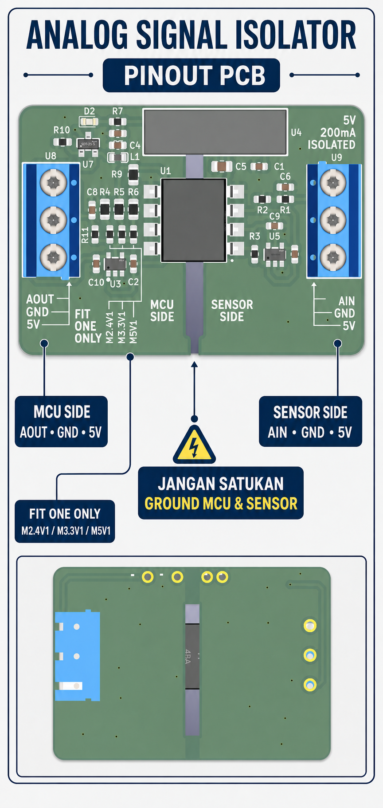
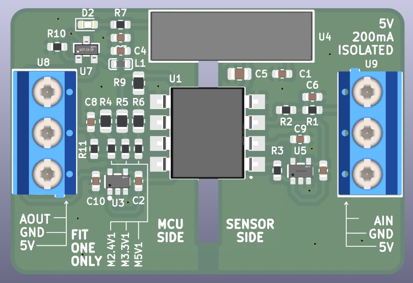
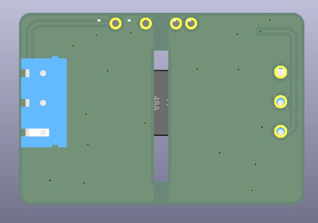

M2.4V1 sudah terpasang. Sensor, kabel, catu daya, dan board ESP32 tidak termasuk. Jangan menyatukan ground MCU dan ground sensor; ikuti label silkscreen pada PCB sebagai rujukan akhir.Ringkasan pinout siap dibagikan

Tampak atas: konektor dan pemilih mode

Arti setiap terminal
| Sisi | Label | Fungsi |
|---|---|---|
| MCU SIDE | AOUT | Ke input ADC/analog host. |
| MCU SIDE | GND | Ground host/MCU/PLC. |
| MCU SIDE | 5V | Masukan catu 5 V untuk modul. |
| SENSOR SIDE | AIN | Masukan sinyal sensor 0–5 V DC. |
| SENSOR SIDE | GND | Ground sensor terisolasi. |
| SENSOR SIDE | 5V | Keluaran +5 V terisolasi untuk sensor, maks. 150 mA kontinu. |
Mode ESP32 sudah dipilih
Area FIT ONE ONLY menggunakan jumper solder/0 Ω. Produk standar dikirim dengan M2.4V1 untuk ESP32 sudah terpasang. Bila konfigurasi diubah saat daya mati, pilih hanya satu: M3.3V1 untuk kelas ADC 3,3 V, atau M5V1 untuk kelas ADC 5 V/PLC. Jangan menjumper lebih dari satu pilihan.
Ukur dan kalibrasikan keluaran AOUT pada AIN = 0 V dan 5 V. Label mode menunjukkan kelas ADC; hasil presisi harus mengikuti pengukuran unit yang digunakan.
Batas catu sensor
Batasi seluruh beban pada pin 5V SENSOR SIDE hingga 150 mA kontinu. Rating DC/DC 200 mA mencakup konsumsi internal PCB, sehingga tidak seluruhnya tersedia untuk sensor. Gunakan catu terisolasi eksternal untuk relay, motor, pemanas, atau beban dengan lonjakan arus besar.
Tampak bawah: jaga celah isolasi
